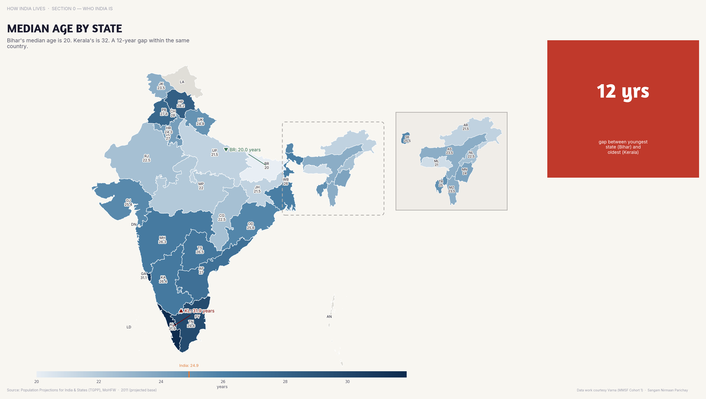
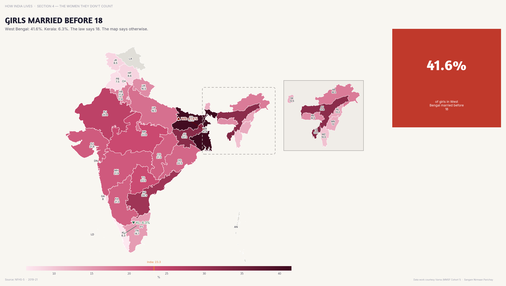

India's North-South Divide, in 7 Maps
The same country, two different development trajectories. Here's what the data shows — and why it matters for policy.
India is not one country when it comes to development outcomes. Kerala's life expectancy exceeds Chhattisgarh's by 13 years. Bihar's female literacy is half of Tamil Nadu's. The gap isn't closing — it's widening.
This story walks you through 7 maps that make this divide visible. Each one tells a piece of the same story: where you are born in India still determines how you live.

A state's median age tells you everything about its development trajectory. Kerala at 33 has an ageing welfare challenge. Bihar at 20 has an employment crisis. They need completely different policies, but get the same central schemes.

The income map is the starkest. The richest Indian states are richer than the poorest countries in Europe. The poorest Indian states are poorer than sub-Saharan Africa. This is one country.

Birth is destiny in India. A child born in Kerala today will live, on average, 13 years longer than one born in Chhattisgarh. That's not a statistic — it's a moral indictment of "national average" policymaking.

The gender map is where the divide becomes personal. In southern states, most girls finish school before marriage. In parts of the north, marriage IS the alternative to school. These are not problems that respond to the same solution.

Literacy is the most upstream indicator — it determines everything downstream. Health-seeking behaviour, contraceptive use, voter participation, economic mobility. A 30-percentage-point literacy gap cascades into every other indicator on this page.

The environmental map tells a parallel story. States with high forest cover tend to have low economic development. Development and environment are still treated as a zero-sum trade-off — but they don't have to be.

Seven maps. One conclusion. India's development story cannot be told in national averages. An average of Kerala and Bihar is a fiction that serves no one. The maps make this visible — and visibility is the first step toward better policy.
Every indicator on this page follows the same geographic fault line. It's not a coincidence. It's a pattern — and patterns demand systemic responses, not one-size-fits-all schemes.
Part of How India Lives · An ImpactMojo Project